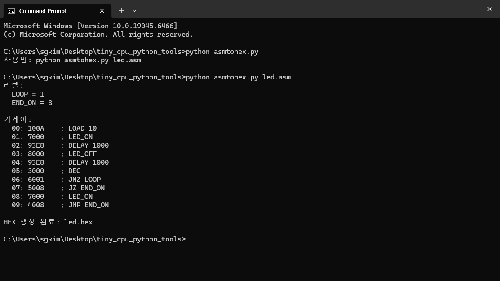

컴파일러작성
어셈블리 언어를 기계어 hex 파일로 변환한다.
변환 프로그램 구동
python asmtohex.py led.asm

변환프로그램
asmtohex.py 파일 이름으로 다음과 파이썬 언어로 작성한다.
import sys
from pathlib import Path
OPCODE = {
"NOP": 0x0,
"LOAD": 0x1,
"INC": 0x2,
"DEC": 0x3,
"JMP": 0x4,
"JZ": 0x5,
"JNZ": 0x6,
"LED_ON": 0x7,
"LED_OFF": 0x8,
"DELAY": 0x9,
}
def remove_comment(line):
return line.split(";")[0].strip()
def parse_number(text):
text = text.strip()
if text.lower().startswith("0x"):
return int(text, 16)
if text.lower().startswith("0b"):
return int(text, 2)
return int(text, 10)
def assemble(asm_text):
labels = {}
instructions = []
pc = 0
# 1차 패스: 라벨 주소 수집
for raw_line in asm_text.splitlines():
line = remove_comment(raw_line)
if not line:
continue
if line.endswith(":"):
label = line[:-1].strip()
if label in labels:
raise ValueError(f"중복 라벨: {label}")
labels[label] = pc
continue
if ":" in line:
label_part, inst_part = line.split(":", 1)
label = label_part.strip()
inst_line = inst_part.strip()
if label in labels:
raise ValueError(f"중복 라벨: {label}")
labels[label] = pc
if inst_line:
instructions.append(inst_line)
pc += 1
continue
instructions.append(line)
pc += 1
machine = []
# 2차 패스: 명령어 변환
for addr, line in enumerate(instructions):
parts = line.replace(",", " ").split()
if not parts:
continue
mnemonic = parts[0].upper()
if mnemonic not in OPCODE:
raise ValueError(f"{addr}: 알 수 없는 명령어: {mnemonic}")
opcode = OPCODE[mnemonic]
operand = 0
if len(parts) >= 2:
arg = parts[1]
if arg in labels:
operand = labels[arg]
else:
operand = parse_number(arg)
if operand < 0 or operand > 0x0FFF:
raise ValueError(f"{addr}: operand 범위 초과 0~4095: {operand}")
word = (opcode << 12) | (operand & 0x0FFF)
machine.append(word)
return machine, labels, instructions
def main():
if len(sys.argv) != 2:
print("사용법: python asmtohex.py led.asm")
sys.exit(1)
asm_path = Path(sys.argv[1])
if not asm_path.exists():
print(f"파일 없음: {asm_path}")
sys.exit(1)
hex_path = asm_path.with_suffix(".hex")
asm_text = asm_path.read_text(encoding="utf-8")
machine, labels, instructions = assemble(asm_text)
with hex_path.open("w", encoding="utf-8") as f:
for word in machine:
f.write(f"{word:04X}\n")
print("라벨:")
for name, addr in labels.items():
print(f" {name} = {addr}")
print()
print("기계어:")
for addr, word in enumerate(machine):
print(f" {addr:02d}: {word:04X} ; {instructions[addr]}")
print()
print(f"HEX 생성 완료: {hex_path}")
if __name__ == "__main__":
main()